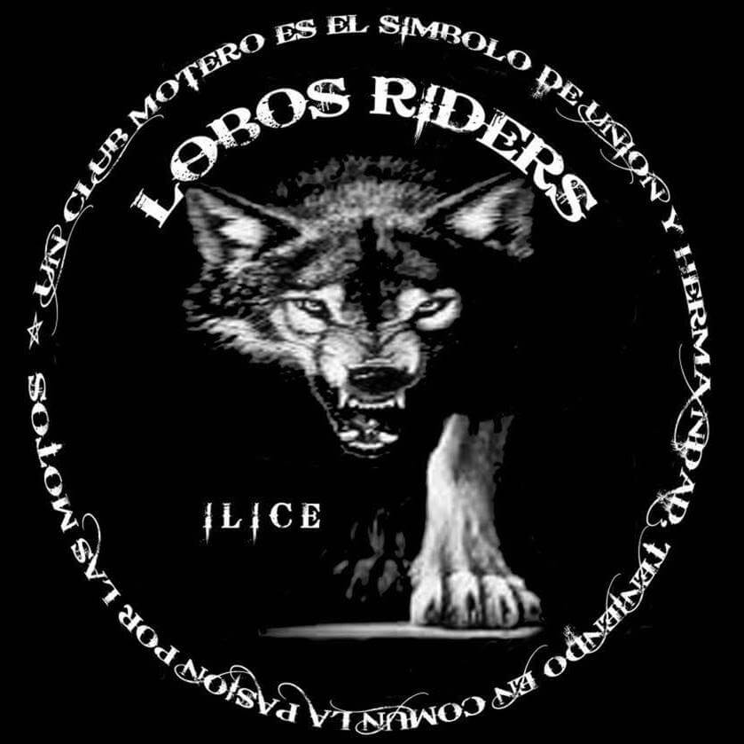

Club Lobos Riders ILICE M.G
Desde 1991
¿Por qué Lobos Riders?
La manada de lobos ha sido desde tiempos inmemoriales un símbolo poderoso de la cohesión, la colaboración y la solidaridad dentro de una comunidad. En su hábitat natural, los lobos dependen unos de otros para sobrevivir en un entorno hostil, y esta dependencia ha dado lugar a una estructura social altamente organizada.
En el corazón de una manada de lobos, encontramos una red de relaciones interdependientes entre los miembros. Cada lobo tiene un papel específico que desempeñar, ya sea cazando, cuidando de las crías, protegiendo el territorio o simplemente fortaleciendo los lazos sociales. Esta diversidad de roles refleja la diversidad de talentos y habilidades dentro de cualquier comunidad humana.
Lo que hace que la manada de lobos sea un símbolo tan poderoso es su capacidad para trabajar juntos hacia un objetivo común. Esta colaboración ejemplifica la importancia de la comunicación efectiva y la cooperación en cualquier grupo humano. Además, la manada de lobos también enseña el valor de la solidaridad y el apoyo mutuo. Los lobos más fuertes protegen a los más débiles, asegurando que todos tengan la oportunidad de sobrevivir y prosperar. Esta actitud altruista es fundamental para el bienestar de cualquier comunidad, ya que todos enfrentamos desafíos en algún momento de nuestras vidas y necesitamos el apoyo de los demás para superarlos.
En resumen, la manada de lobos nos recuerda que, al igual que estos magníficos animales, nuestra fuerza radica en nuestra unidad. Cuando nos unimos, nos convertimos en una fuerza imparable capaz de superar cualquier obstáculo y alcanzar nuestras metas colectivas. La lección de la manada de lobos es clara: juntos somos más fuertes.
Historia del Club
El club Lobos Riders M.G es un club de motos que surgió en el año 1991 creado por un grupo de amigos que mantenian un fuerte vínculo de amistad y tenian en común la pasión por las motos. Esta unión, hizo nacer el club que hoy en día existe manteniendo el mismo espíritu de unión y fraternidad que en sus origenes.
A lo largo de los años el club ha sufrido cambios, ampliándose en número, sumando y restando miembros. Cada uno de los pertenecientes a nuestra historia ha dejado una huella en el club y nos sentimos orgullosos de seguir manteniendo la amistad que surgió de este fuerte vínculo.
En la actualidad el club está compuesto de 19 miembros y 2 aspirantes a miembros.
Símbolos: Nuestro Chaleco
Los chalecos moteros con parches de clubes son mucho más que simples prendas de vestir, representan la pertenencia a una hermandad, la lealtad a un grupo y un profundo sentido de identidad y camaradería entre quienes los llevan. Cada parche en el chaleco cuenta una historia, revela un compromiso y simboliza una conexión inquebrantable con los compañeros de ruta. Para los miembros de un club, el chaleco y su parche son emblemas de honor y orgullo.

Nuestros Colores.
Estos símbolos identifican a cada uno de los miembros como pertenecientes al club. Además, cada uno de ellos podrán llevar diversos distintivos que identifican sus cargos o compromiso con el club.
Trasera del Chaleco. Parche :
- El parche se identifica con un lobo caminando de frente, con postura de intimidación, enseñando los dientes y surgiendo de la oscuridad. En la parte superior entre las orejas se dispone el nombre del club. El parche esta ubicado en la parte trasera del chaleco.
- A lo largo de nuestro largo recorrido hemos mostrado dos versiones del parche, que originalmente era redondo con una leyenda que hablaba del significado de la palabra hermandad, y posteriormente adaptó su forma al contenido del mismo.
Frontal del Chaleco. Stick:
- Strick Club:
- Stick que lleva el nombre del club.
- Stick Cargo:
- Stick que muestra el cargo o responsabilidad asumida dentro del club.
- Stick Miembro Fundador:
- Stick que identifica a los miembros fundadores.
Cargos:
El club, como estructura organizada, tiene miembros que asumen la responsabilidad que todos sus hermanos les otorgan en votación democrática. En Lobos Riders contamos con los siguientes cargos:
PRESIDENTE:
Es presidente de la Junta Directiva y de la Asamblea General, ostenta la representación legal del club, actúa en su nombre y está obligado a ejecutar los acuerdos válidamente adoptados por la Asamblea General o la Junta Directiva.
VICEPRESIDENTE:
Tendrá las responsabilidades del presidente en su ausencia y dará apoyo a este en sus responsabilidades.
SECRETARIO
Actuará de portavoz y levantara acta de las reuniones que se celebren, las escribirá en el libro correspondiente, mantendrá un archivo actualizado de las normas internas del club y será responsable de la custodia de todos los documentos del club, así como las certificaciones o actas que deban ser presentadas antes organismos o entidades.
TESORERA
Gestionará los recursos económicos del club, encargandose de la realización de ingresos y pagos para el club.
CAPITÁN DE RUTA:
Propondrá y dirigirá las salidas y rutas. Además, será responsable de la seguridad de todos los participantes de ella.